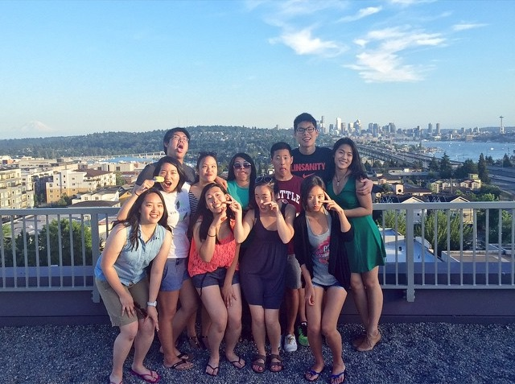
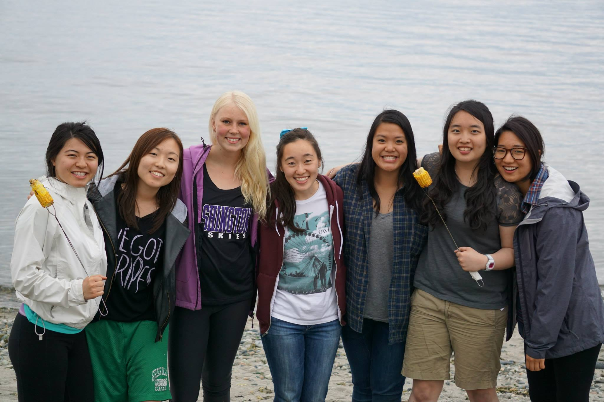
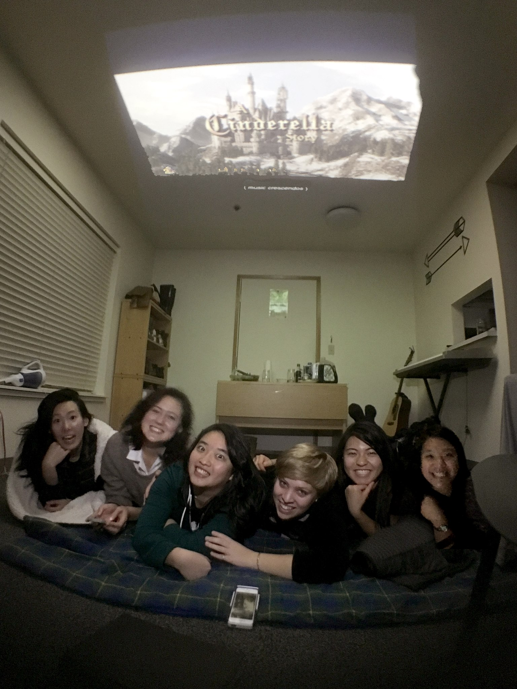
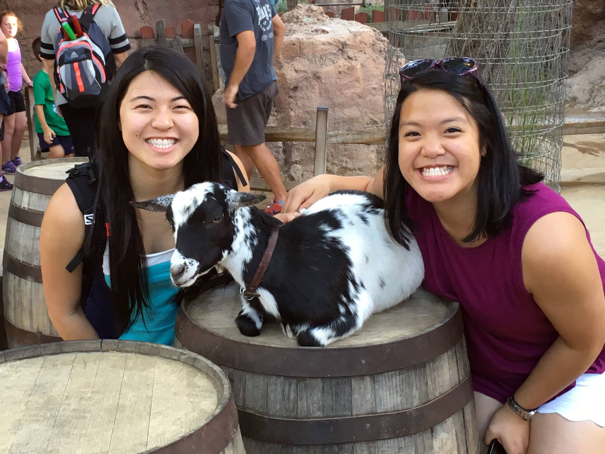
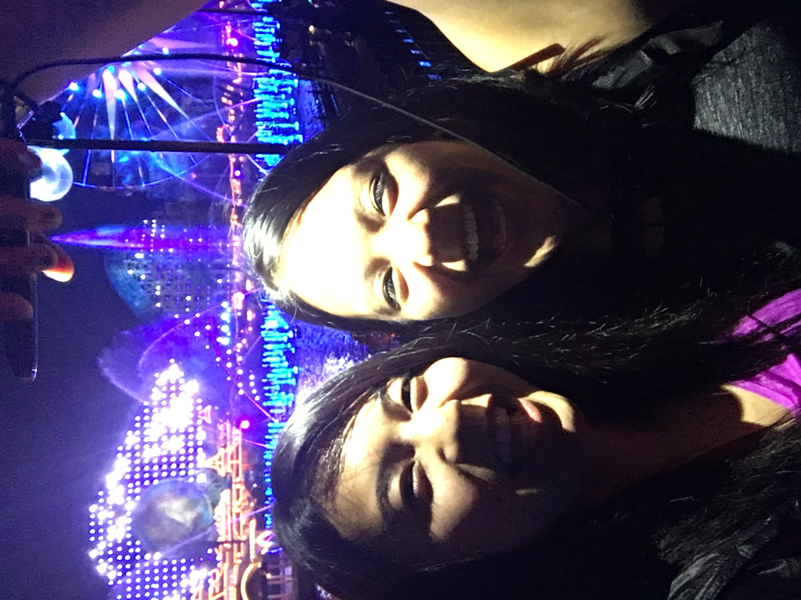
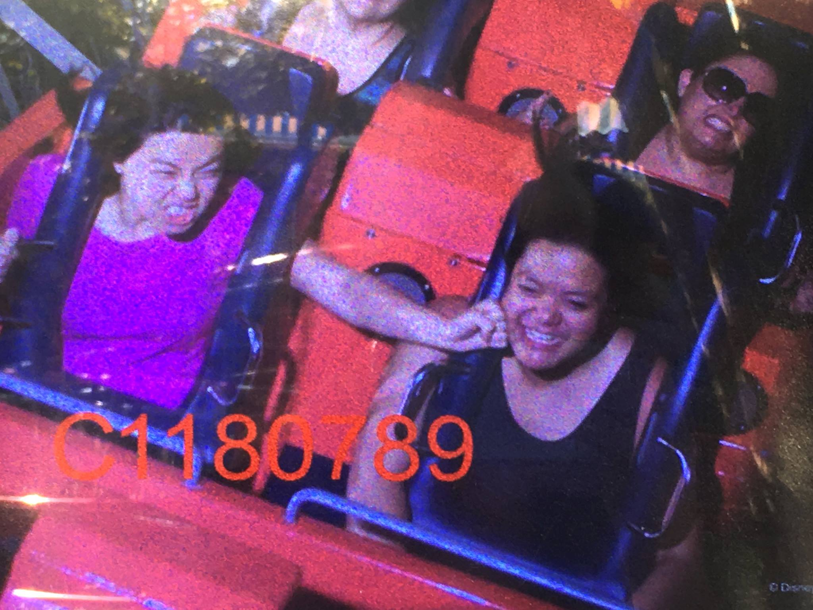
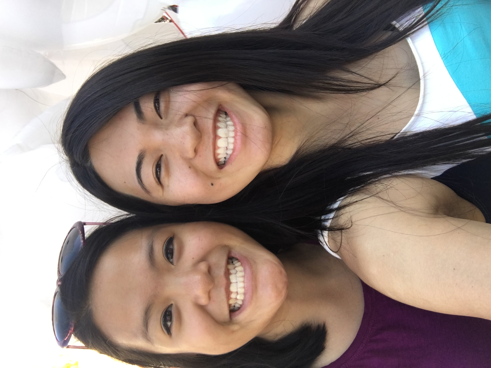
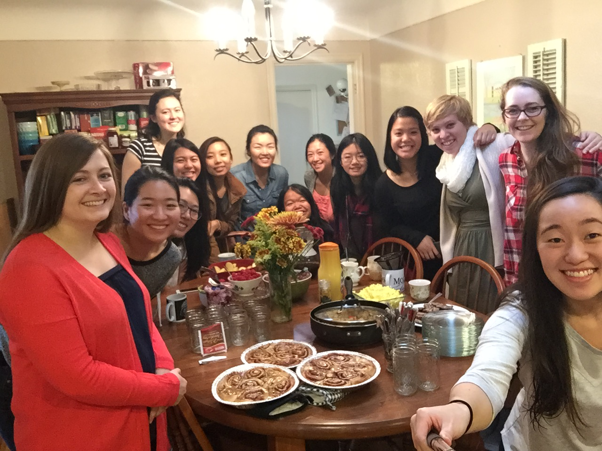

I feel so blessed to have you in my life, and it is my hope that you feel loved! Not just loved today, because it's your special day, but every day. KNOW that you are so dearly loved! By me, by everyone in our small group, and by Him. Don't ever listen to the whispers in your mind that might tell you otherwise. I'm so thankful that He's put you in my life, and I can't doubt that you've been a vessel of His love.
Kristen, I love and admire your loyalty.Thank you for staying my friend all of these years, through all of my own selfishness or lack of effort. Thank you for always speaking the truth in love to me, and leading me towards Him. Thank you for not giving up on me, even when I wanted to. And more important than your loyalty as a friend, I admire your loyalty to God. How you trust Him even when things don't go as you may have planned, how you prioritize serving Him even if it means losing some sleep (don't kill yourself, though!!) or having some uncomfortable conversations with your boss about your availability, and how you continue to set a strong example of faith for your family, even when they may unintentionally be pulling you away from your church family.
And thank you for inspiring me! I've watched you choose to keep your faith in Him, even when things don't seem to go your way. I've watched you burst with praise and thankfulness when they do. I see how you really try to make disciples, from inviting and welcoming new people to Blue Sky and small group (our small group, myself included, feels you have the gift of evangelism!), to being intentional about your time with the brothers and sisters (mostly sisters, haha) in our small group. I see the joy in you when you sing praises to Him, which you do so beautifully, btw :), and I'm proud of how you contribute the lovely piano-playing ability He has given you to the church. You're always saying you make so many mistakes, but it still sounds wonderful to me (so imagine how wonderful He finds it!).
Kristen, I just want to emphasize that you are loved, just the way you are. I don't know about you, but I notice that I have a tendency to judge (or love/not love) myself based on my achievements, yet love others for who their character (how they act, how they love - not for what they've accomplished). I want to remind you that you never need to work to be good enough for my love, nor His (He did that for you!! What a deal, man). He is delighted when you honor Him with your actions, as love is DOING what is right for the good of another, but you don't have to earn anything. You don't need to worry about being good enough :) Rest assured that He's made you just the way you are, and planned every detail of your life (with your own specific struggles so that you would glorify Him in a unique way). I hope that me spending less time telling you how cool you are in this year's birthday message (you know, complimenting your beautiful voice/piano skills, your sweet and gentle spirit, your impressive juggling of classes and group leading and church serving, your faith in Him even when things are hard...it goes on, there's just too much!!) serves to emphasize my point that you are loved for YOU, and not for what you've ACCOMPLISHED.
And now a brief walk down memory lane...apparently just as brief as last year. Seriously, where are all of the pictures?? I guess I only started taking them this summer LOL...also I do not know why some of them are rotated hahaha








And oh heyyy, I finally did a picture dump for Disneyland...here! :) ...I think some Six Flags ones are missing, but I'll get to it lol
So happy birthday, Kristen! Life may be pretty different one year from now, but I welcome His plan with open arms. I am so proud of how you have grown since I met you, and even just from last year (group leader, woot woot), and I'm so excited for where He'll take you in the next 356 days!
Lots of love,